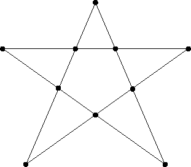
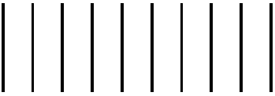
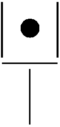

Charadas
==============================
==============================
Voltar
"O pai do padre é filho único do meu pai.
O que o padre é meu?"
"Eu tenho o dobro da idade que você tinha quando eu
tinha a idade que você tem. Quando você tiver a idade
que eu tenho, eu terei 50 anos. Quantos anos eu tinha
quando você nasceu?"
"Dados 9 grãos de feijão, na estrela de cinco pontas abaixo, sair com um
grão de um ponto vazio, pular outro (vazio ou não) e o colocar no seguinte.
O objetivo é conseguir colocar os 9 grãos de feijão nos pontos da estrela,
seguindo esta regra. Assim, ficará somente um ponto sem grão."

"Dados os dez palitos abaixo, formar 5 'X' com eles. Para isto, deve-se pegar um
palito, pular exatamente dois outros e formar o 'X' com o terceiro. Lembre-se que,
ao pular um 'X' formado, já se pulam dois palitos."

"Dados os palitos que definem a pá de lixo abaixo, com lixo dentro dela, deseja-se
retirar o lixo da pá mexendo dois palitos apenas, um de cada vez."

Respostas
Voltar